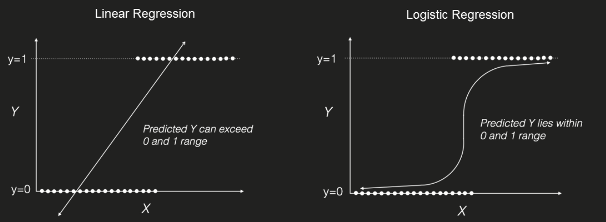
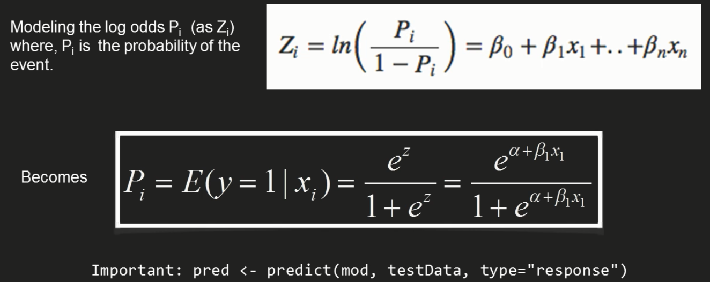
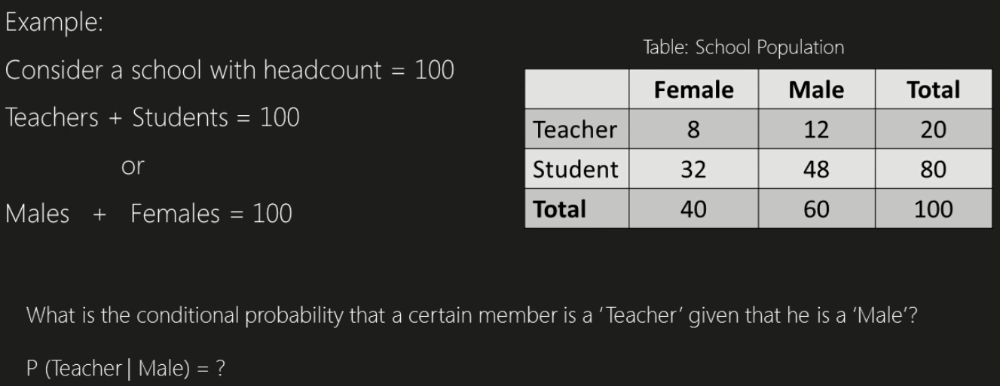
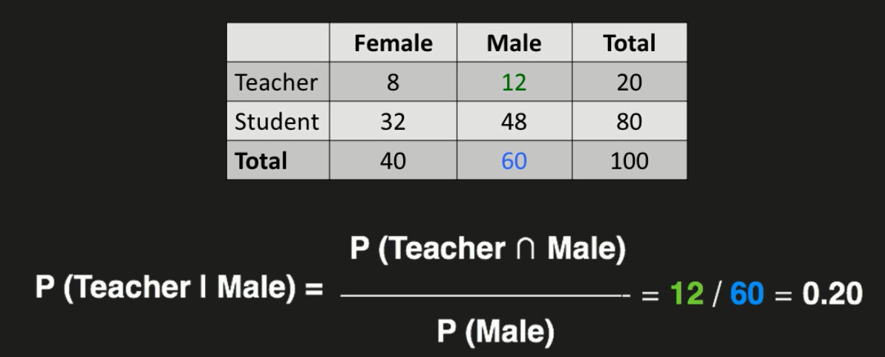
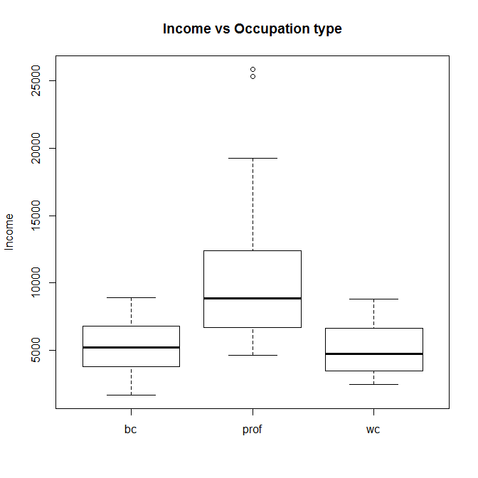
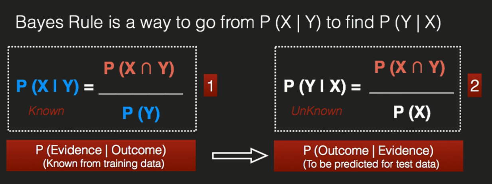
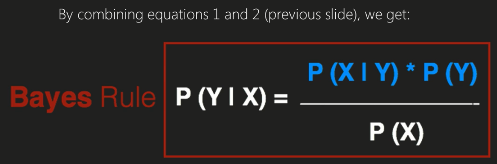

Pre-model Building steps
Jose Parreno Garcia
November 2017
# ----------------------------------------------------------------------
# Loading libraries
# ----------------------------------------------------------------------
library(MASS)
library(plotly)
library(ggplot2)
library(data.table)
# Other
library(knitr)
library(psych)Before we begin predictive modelling or machine learning, it is essential to understand the data and describe relationships between variables. Often preparatory steps are needed before we build and models. In this section we will understand variables using:
- Univariate analysis
- Bivariate analysis
- Outlier detection
- Missing value treatment
1 Univariate analysis.
In this section we will focus on trying to understand:
- Type of variables
- Measures of central tendency
- Measures of dispersion
1.1 Types of variables.
We encounter 2 types of variables: continuous or categorical variables. You can check the classificatin of both types of variables in the table below.

1.2 Measures of central tendency
A continuous variable requires the most work. When it comes to unvariate analysis, we compute the measure of central tendency and measures of dispersion. You can remember the measures of tendency by the 3 Ms: mean, median, mode (mode is actually most useful for categorical data). As per dispersion measures, the coefficient of variation is quite important if we want to compared measures of variables with different ranges.

1.3 Checking in R
Check the comments in the R code for any explanations
## LOADING REQUIRED PACKAGES
# install.packages('car') # only run if you haven't got the package installed.
require(car)## Loading required package: car##
## Attaching package: 'car'## The following object is masked from 'package:psych':
##
## logit## LOADING THE DATA FROM THE PACKAGE
data(Prestige, package = 'car')
## LOOKING AT THE FIRST ROWS FROM THE DATASET
head(Prestige)## education income women prestige census type
## gov.administrators 13.11 12351 11.16 68.8 1113 prof
## general.managers 12.26 25879 4.02 69.1 1130 prof
## accountants 12.77 9271 15.70 63.4 1171 prof
## purchasing.officers 11.42 8865 9.11 56.8 1175 prof
## chemists 14.62 8403 11.68 73.5 2111 prof
## physicists 15.64 11030 5.13 77.6 2113 profThis data talks about 6 differnt attributes of people in different proffesions. 5 of these variables appear to be numeric and 1 appears to be categorial (type). Let’s take the income variable as an example to check some measures of central tendency.
# In all the checks below you can see we use the argument na.rm=T. This is to ensure that any possible na values are removed from the calculations. I always tend to check the percentage of na per variable to understand if it is worth performing any calculations on them. However, let's just investigate the measures with the na.rm argument.
mean(Prestige$income, na.rm = T)## [1] 6797.902median(Prestige$income, na.rm = T)## [1] 5930.5sd(Prestige$income, na.rm = T)## [1] 4245.922var(Prestige$income, na.rm = T)## [1] 18027856quantile(Prestige$income, probs = c(0.01,0.05,0.1,0.25,0.5,0.75,0.9,0.95,0.99), na.rm = T)## 1% 5% 10% 25% 50% 75% 90% 95% 99%
## 925.38 2455.30 3026.00 4106.00 5930.50 8187.25 11029.30 14156.45 25247.55Now this is interesting, but even just performing this analysis on the rest of the variables in this dataset is tedious (even more if we had hundreds of variables). We could use:
- The summary() function.
- Even better, the describe() function from the Hmisc package.
- stat.desc() function from the pastecs package.
summary(Prestige)## education income women prestige census type
## Min. : 6.380 Min. : 611 Min. : 0.000 Min. :14.80 Min. :1113 bc :44
## 1st Qu.: 8.445 1st Qu.: 4106 1st Qu.: 3.592 1st Qu.:35.23 1st Qu.:3120 prof:31
## Median :10.540 Median : 5930 Median :13.600 Median :43.60 Median :5135 wc :23
## Mean :10.738 Mean : 6798 Mean :28.979 Mean :46.83 Mean :5402 NA's: 4
## 3rd Qu.:12.648 3rd Qu.: 8187 3rd Qu.:52.203 3rd Qu.:59.27 3rd Qu.:8312
## Max. :15.970 Max. :25879 Max. :97.510 Max. :87.20 Max. :9517## LOADING REQUIRED PACKAGES
# install.packages('Hmisc') # only run if you haven't got the package installed.
require(Hmisc)## Loading required package: Hmisc## Warning: package 'Hmisc' was built under R version 3.4.2## Loading required package: lattice## Loading required package: survival## Loading required package: Formula## Warning: package 'Formula' was built under R version 3.4.1##
## Attaching package: 'Hmisc'## The following object is masked from 'package:psych':
##
## describe## The following object is masked from 'package:plotly':
##
## subplot## The following objects are masked from 'package:base':
##
## format.pval, round.POSIXt, trunc.POSIXt, unitsdescribe(Prestige)## Prestige
##
## 6 Variables 102 Observations
## ----------------------------------------------------------------------------------------------------------------------------------------------------------------------------------------------------------------------------------------------------------
## education
## n missing distinct Info Mean Gmd .05 .10 .25 .50 .75 .90 .95
## 102 0 96 1 10.74 3.136 6.844 7.522 8.445 10.540 12.648 14.703 15.429
##
## lowest : 6.38 6.60 6.67 6.69 6.74, highest: 15.64 15.77 15.94 15.96 15.97
## ----------------------------------------------------------------------------------------------------------------------------------------------------------------------------------------------------------------------------------------------------------
## income
## n missing distinct Info Mean Gmd .05 .10 .25 .50 .75 .90 .95
## 102 0 100 1 6798 4167 2455 3026 4106 5930 8187 11029 14156
##
## lowest : 611 918 1656 1890 2370, highest: 14558 17498 19263 25308 25879
## ----------------------------------------------------------------------------------------------------------------------------------------------------------------------------------------------------------------------------------------------------------
## women
## n missing distinct Info Mean Gmd .05 .10 .25 .50 .75 .90 .95
## 102 0 96 1 28.98 33.98 0.522 0.783 3.592 13.600 52.203 82.104 92.805
##
## lowest : 0.00 0.52 0.56 0.58 0.61, highest: 95.97 96.12 96.14 96.53 97.51
## ----------------------------------------------------------------------------------------------------------------------------------------------------------------------------------------------------------------------------------------------------------
## prestige
## n missing distinct Info Mean Gmd .05 .10 .25 .50 .75 .90 .95
## 102 0 92 1 46.83 19.72 21.59 25.92 35.23 43.60 59.28 71.82 74.83
##
## lowest : 14.8 17.3 20.1 20.2 20.8, highest: 77.6 78.1 82.3 84.6 87.2
## ----------------------------------------------------------------------------------------------------------------------------------------------------------------------------------------------------------------------------------------------------------
## census
## n missing distinct Info Mean Gmd .05 .10 .25 .50 .75 .90 .95
## 102 0 101 1 5402 3023 2114 2161 3120 5135 8312 8782 9130
##
## lowest : 1113 1130 1171 1175 2111, highest: 9171 9173 9313 9511 9517
## ----------------------------------------------------------------------------------------------------------------------------------------------------------------------------------------------------------------------------------------------------------
## type
## n missing distinct
## 98 4 3
##
## Value bc prof wc
## Frequency 44 31 23
## Proportion 0.449 0.316 0.235
## ----------------------------------------------------------------------------------------------------------------------------------------------------------------------------------------------------------------------------------------------------------## LOADING REQUIRED PACKAGES
# install.packages('pastecs') # only run if you haven't got the package installed.
require(pastecs)## Loading required package: pastecs## Warning: package 'pastecs' was built under R version 3.4.2## Loading required package: boot##
## Attaching package: 'boot'## The following object is masked from 'package:survival':
##
## aml## The following object is masked from 'package:lattice':
##
## melanoma## The following object is masked from 'package:car':
##
## logit## The following object is masked from 'package:psych':
##
## logit##
## Attaching package: 'pastecs'## The following objects are masked from 'package:data.table':
##
## first, laststat.desc(Prestige)## education income women prestige census type
## nbr.val 102.0000000 1.020000e+02 102.000000 102.0000000 1.020000e+02 NA
## nbr.null 0.0000000 0.000000e+00 5.000000 0.0000000 0.000000e+00 NA
## nbr.na 0.0000000 0.000000e+00 0.000000 0.0000000 0.000000e+00 NA
## min 6.3800000 6.110000e+02 0.000000 14.8000000 1.113000e+03 NA
## max 15.9700000 2.587900e+04 97.510000 87.2000000 9.517000e+03 NA
## range 9.5900000 2.526800e+04 97.510000 72.4000000 8.404000e+03 NA
## sum 1095.2800000 6.933860e+05 2955.860000 4777.0000000 5.509810e+05 NA
## median 10.5400000 5.930500e+03 13.600000 43.6000000 5.135000e+03 NA
## mean 10.7380392 6.797902e+03 28.979020 46.8333333 5.401775e+03 NA
## SE.mean 0.2701562 4.204089e+02 3.141236 1.7034979 2.618934e+02 NA
## CI.mean.0.95 0.5359173 8.339783e+02 6.231368 3.3792816 5.195260e+02 NA
## var 7.4444080 1.802786e+07 1006.471223 295.9943234 6.995989e+06 NA
## std.dev 2.7284442 4.245922e+03 31.724931 17.2044856 2.644993e+03 NA
## coef.var 0.2540915 6.245930e-01 1.094755 0.3673556 4.896527e-01 NASo as any example, let’s use this to understand better the Cars93 dataset from the MASS package and check one individual column.
## LOADING REQUIRED PACKAGES
# install.packages('MASS') # only run if you haven't got the package installed.
require(MASS)
## LOADING THE DATA FROM THE PACKAGE
data(Cars93, package = 'MASS')
## LOOKING AT THE FIRST ROWS FROM THE DATASET
head(Cars93)## Manufacturer Model Type Min.Price Price Max.Price MPG.city MPG.highway AirBags DriveTrain Cylinders EngineSize Horsepower RPM Rev.per.mile Man.trans.avail Fuel.tank.capacity Passengers Length Wheelbase Width Turn.circle
## 1 Acura Integra Small 12.9 15.9 18.8 25 31 None Front 4 1.8 140 6300 2890 Yes 13.2 5 177 102 68 37
## 2 Acura Legend Midsize 29.2 33.9 38.7 18 25 Driver & Passenger Front 6 3.2 200 5500 2335 Yes 18.0 5 195 115 71 38
## 3 Audi 90 Compact 25.9 29.1 32.3 20 26 Driver only Front 6 2.8 172 5500 2280 Yes 16.9 5 180 102 67 37
## 4 Audi 100 Midsize 30.8 37.7 44.6 19 26 Driver & Passenger Front 6 2.8 172 5500 2535 Yes 21.1 6 193 106 70 37
## 5 BMW 535i Midsize 23.7 30.0 36.2 22 30 Driver only Rear 4 3.5 208 5700 2545 Yes 21.1 4 186 109 69 39
## 6 Buick Century Midsize 14.2 15.7 17.3 22 31 Driver only Front 4 2.2 110 5200 2565 No 16.4 6 189 105 69 41
## Rear.seat.room Luggage.room Weight Origin Make
## 1 26.5 11 2705 non-USA Acura Integra
## 2 30.0 15 3560 non-USA Acura Legend
## 3 28.0 14 3375 non-USA Audi 90
## 4 31.0 17 3405 non-USA Audi 100
## 5 27.0 13 3640 non-USA BMW 535i
## 6 28.0 16 2880 USA Buick Century## Summary
summary(Cars93)## Manufacturer Model Type Min.Price Price Max.Price MPG.city MPG.highway AirBags DriveTrain Cylinders EngineSize Horsepower RPM Rev.per.mile Man.trans.avail
## Chevrolet: 8 100 : 1 Compact:16 Min. : 6.70 Min. : 7.40 Min. : 7.9 Min. :15.00 Min. :20.00 Driver & Passenger:16 4WD :10 3 : 3 Min. :1.000 Min. : 55.0 Min. :3800 Min. :1320 No :32
## Ford : 8 190E : 1 Large :11 1st Qu.:10.80 1st Qu.:12.20 1st Qu.:14.7 1st Qu.:18.00 1st Qu.:26.00 Driver only :43 Front:67 4 :49 1st Qu.:1.800 1st Qu.:103.0 1st Qu.:4800 1st Qu.:1985 Yes:61
## Dodge : 6 240 : 1 Midsize:22 Median :14.70 Median :17.70 Median :19.6 Median :21.00 Median :28.00 None :34 Rear :16 5 : 2 Median :2.400 Median :140.0 Median :5200 Median :2340
## Mazda : 5 300E : 1 Small :21 Mean :17.13 Mean :19.51 Mean :21.9 Mean :22.37 Mean :29.09 6 :31 Mean :2.668 Mean :143.8 Mean :5281 Mean :2332
## Pontiac : 5 323 : 1 Sporty :14 3rd Qu.:20.30 3rd Qu.:23.30 3rd Qu.:25.3 3rd Qu.:25.00 3rd Qu.:31.00 8 : 7 3rd Qu.:3.300 3rd Qu.:170.0 3rd Qu.:5750 3rd Qu.:2565
## Buick : 4 535i : 1 Van : 9 Max. :45.40 Max. :61.90 Max. :80.0 Max. :46.00 Max. :50.00 rotary: 1 Max. :5.700 Max. :300.0 Max. :6500 Max. :3755
## (Other) :57 (Other):87
## Fuel.tank.capacity Passengers Length Wheelbase Width Turn.circle Rear.seat.room Luggage.room Weight Origin Make
## Min. : 9.20 Min. :2.000 Min. :141.0 Min. : 90.0 Min. :60.00 Min. :32.00 Min. :19.00 Min. : 6.00 Min. :1695 USA :48 Acura Integra: 1
## 1st Qu.:14.50 1st Qu.:4.000 1st Qu.:174.0 1st Qu.: 98.0 1st Qu.:67.00 1st Qu.:37.00 1st Qu.:26.00 1st Qu.:12.00 1st Qu.:2620 non-USA:45 Acura Legend : 1
## Median :16.40 Median :5.000 Median :183.0 Median :103.0 Median :69.00 Median :39.00 Median :27.50 Median :14.00 Median :3040 Audi 100 : 1
## Mean :16.66 Mean :5.086 Mean :183.2 Mean :103.9 Mean :69.38 Mean :38.96 Mean :27.83 Mean :13.89 Mean :3073 Audi 90 : 1
## 3rd Qu.:18.80 3rd Qu.:6.000 3rd Qu.:192.0 3rd Qu.:110.0 3rd Qu.:72.00 3rd Qu.:41.00 3rd Qu.:30.00 3rd Qu.:15.00 3rd Qu.:3525 BMW 535i : 1
## Max. :27.00 Max. :8.000 Max. :219.0 Max. :119.0 Max. :78.00 Max. :45.00 Max. :36.00 Max. :22.00 Max. :4105 Buick Century: 1
## NA's :2 NA's :11 (Other) :87##
describe(Cars93)## Cars93
##
## 27 Variables 93 Observations
## ----------------------------------------------------------------------------------------------------------------------------------------------------------------------------------------------------------------------------------------------------------
## Manufacturer
## n missing distinct
## 93 0 32
##
## lowest : Acura Audi BMW Buick Cadillac , highest: Subaru Suzuki Toyota Volkswagen Volvo
## ----------------------------------------------------------------------------------------------------------------------------------------------------------------------------------------------------------------------------------------------------------
## Model
## n missing distinct
## 93 0 93
##
## lowest : 100 190E 240 300E 323 , highest: Taurus Tempo Tercel Town_Car Vision
## ----------------------------------------------------------------------------------------------------------------------------------------------------------------------------------------------------------------------------------------------------------
## Type
## n missing distinct
## 93 0 6
##
## Value Compact Large Midsize Small Sporty Van
## Frequency 16 11 22 21 14 9
## Proportion 0.172 0.118 0.237 0.226 0.151 0.097
## ----------------------------------------------------------------------------------------------------------------------------------------------------------------------------------------------------------------------------------------------------------
## Min.Price
## n missing distinct Info Mean Gmd .05 .10 .25 .50 .75 .90 .95
## 93 0 79 1 17.13 9.418 7.36 7.96 10.80 14.70 20.30 30.54 34.48
##
## lowest : 6.7 6.8 6.9 7.3 7.4, highest: 34.6 34.7 37.5 43.8 45.4
## ----------------------------------------------------------------------------------------------------------------------------------------------------------------------------------------------------------------------------------------------------------
## Price
## n missing distinct Info Mean Gmd .05 .10 .25 .50 .75 .90 .95
## 93 0 81 1 19.51 10.17 8.52 9.84 12.20 17.70 23.30 33.62 36.74
##
## lowest : 7.4 8.0 8.3 8.4 8.6, highest: 37.7 38.0 40.1 47.9 61.9
## ----------------------------------------------------------------------------------------------------------------------------------------------------------------------------------------------------------------------------------------------------------
## Max.Price
## n missing distinct Info Mean Gmd .05 .10 .25 .50 .75 .90 .95
## 93 0 79 1 21.9 11.25 9.74 11.00 14.70 19.60 25.30 36.08 39.82
##
## lowest : 7.9 9.1 9.2 9.5 9.9, highest: 41.5 42.7 44.6 50.4 80.0
## ----------------------------------------------------------------------------------------------------------------------------------------------------------------------------------------------------------------------------------------------------------
## MPG.city
## n missing distinct Info Mean Gmd .05 .10 .25 .50 .75 .90 .95
## 93 0 21 0.993 22.37 5.8 16.6 17.0 18.0 21.0 25.0 29.0 31.4
##
## lowest : 15 16 17 18 19, highest: 32 33 39 42 46
## ----------------------------------------------------------------------------------------------------------------------------------------------------------------------------------------------------------------------------------------------------------
## MPG.highway
## n missing distinct Info Mean Gmd .05 .10 .25 .50 .75 .90 .95
## 93 0 22 0.994 29.09 5.697 22.0 23.2 26.0 28.0 31.0 36.0 37.4
##
## lowest : 20 21 22 23 24, highest: 38 41 43 46 50
## ----------------------------------------------------------------------------------------------------------------------------------------------------------------------------------------------------------------------------------------------------------
## AirBags
## n missing distinct
## 93 0 3
##
## Value Driver & Passenger Driver only None
## Frequency 16 43 34
## Proportion 0.172 0.462 0.366
## ----------------------------------------------------------------------------------------------------------------------------------------------------------------------------------------------------------------------------------------------------------
## DriveTrain
## n missing distinct
## 93 0 3
##
## Value 4WD Front Rear
## Frequency 10 67 16
## Proportion 0.108 0.720 0.172
## ----------------------------------------------------------------------------------------------------------------------------------------------------------------------------------------------------------------------------------------------------------
## Cylinders
## n missing distinct
## 93 0 6
##
## Value 3 4 5 6 8 rotary
## Frequency 3 49 2 31 7 1
## Proportion 0.032 0.527 0.022 0.333 0.075 0.011
## ----------------------------------------------------------------------------------------------------------------------------------------------------------------------------------------------------------------------------------------------------------
## EngineSize
## n missing distinct Info Mean Gmd .05 .10 .25 .50 .75 .90 .95
## 93 0 26 0.995 2.668 1.15 1.42 1.50 1.80 2.40 3.30 3.80 4.60
##
## lowest : 1.0 1.2 1.3 1.5 1.6, highest: 4.5 4.6 4.9 5.0 5.7
## ----------------------------------------------------------------------------------------------------------------------------------------------------------------------------------------------------------------------------------------------------------
## Horsepower
## n missing distinct Info Mean Gmd .05 .10 .25 .50 .75 .90 .95
## 93 0 57 0.999 143.8 57.44 78.2 86.0 103.0 140.0 170.0 206.8 237.0
##
## lowest : 55 63 70 73 74, highest: 225 255 278 295 300
## ----------------------------------------------------------------------------------------------------------------------------------------------------------------------------------------------------------------------------------------------------------
## RPM
## n missing distinct Info Mean Gmd .05 .10 .25 .50 .75 .90 .95
## 93 0 24 0.99 5281 678.7 4200 4600 4800 5200 5750 6000 6000
##
## lowest : 3800 4000 4100 4200 4400, highest: 5900 6000 6200 6300 6500
## ----------------------------------------------------------------------------------------------------------------------------------------------------------------------------------------------------------------------------------------------------------
## Rev.per.mile
## n missing distinct Info Mean Gmd .05 .10 .25 .50 .75 .90 .95
## 93 0 78 1 2332 556.2 1543 1690 1985 2340 2565 2906 3264
##
## lowest : 1320 1350 1415 1450 1510, highest: 3285 3360 3375 3505 3755
## ----------------------------------------------------------------------------------------------------------------------------------------------------------------------------------------------------------------------------------------------------------
## Man.trans.avail
## n missing distinct
## 93 0 2
##
## Value No Yes
## Frequency 32 61
## Proportion 0.344 0.656
## ----------------------------------------------------------------------------------------------------------------------------------------------------------------------------------------------------------------------------------------------------------
## Fuel.tank.capacity
## n missing distinct Info Mean Gmd .05 .10 .25 .50 .75 .90 .95
## 93 0 38 0.996 16.66 3.701 11.58 12.40 14.50 16.40 18.80 20.00 21.10
##
## lowest : 9.2 10.0 10.6 11.1 11.9, highest: 21.0 21.1 22.5 23.0 27.0
## ----------------------------------------------------------------------------------------------------------------------------------------------------------------------------------------------------------------------------------------------------------
## Passengers
## n missing distinct Info Mean Gmd
## 93 0 6 0.891 5.086 1.097
##
## Value 2 4 5 6 7 8
## Frequency 2 23 41 18 8 1
## Proportion 0.022 0.247 0.441 0.194 0.086 0.011
## ----------------------------------------------------------------------------------------------------------------------------------------------------------------------------------------------------------------------------------------------------------
## Length
## n missing distinct Info Mean Gmd .05 .10 .25 .50 .75 .90 .95
## 93 0 51 0.999 183.2 16.36 161.6 166.0 174.0 183.0 192.0 201.8 205.4
##
## lowest : 141 146 151 159 161, highest: 206 212 214 216 219
## ----------------------------------------------------------------------------------------------------------------------------------------------------------------------------------------------------------------------------------------------------------
## Wheelbase
## n missing distinct Info Mean Gmd .05 .10 .25 .50 .75 .90 .95
## 93 0 27 0.997 103.9 7.848 93.6 96.0 98.0 103.0 110.0 113.0 115.0
##
## lowest : 90 93 94 95 96, highest: 114 115 116 117 119
## ----------------------------------------------------------------------------------------------------------------------------------------------------------------------------------------------------------------------------------------------------------
## Width
## n missing distinct Info Mean Gmd .05 .10 .25 .50 .75 .90 .95
## 93 0 16 0.99 69.38 4.268 63.0 65.2 67.0 69.0 72.0 74.0 75.8
##
## Value 60 63 64 65 66 67 68 69 70 71 72 73 74 75 77 78
## Frequency 1 5 1 3 10 15 7 11 7 5 7 4 11 1 2 3
## Proportion 0.011 0.054 0.011 0.032 0.108 0.161 0.075 0.118 0.075 0.054 0.075 0.043 0.118 0.011 0.022 0.032
## ----------------------------------------------------------------------------------------------------------------------------------------------------------------------------------------------------------------------------------------------------------
## Turn.circle
## n missing distinct Info Mean Gmd .05 .10 .25 .50 .75 .90 .95
## 93 0 14 0.992 38.96 3.702 34.0 34.2 37.0 39.0 41.0 43.0 44.0
##
## Value 32 33 34 35 36 37 38 39 40 41 42 43 44 45
## Frequency 2 2 6 4 9 9 8 11 10 9 9 7 4 3
## Proportion 0.022 0.022 0.065 0.043 0.097 0.097 0.086 0.118 0.108 0.097 0.097 0.075 0.043 0.032
## ----------------------------------------------------------------------------------------------------------------------------------------------------------------------------------------------------------------------------------------------------------
## Rear.seat.room
## n missing distinct Info Mean Gmd .05 .10 .25 .50 .75 .90 .95
## 91 2 24 0.995 27.83 3.3 23.5 24.5 26.0 27.5 30.0 31.0 32.5
##
## lowest : 19.0 20.0 23.0 23.5 24.0, highest: 31.5 33.5 34.0 35.0 36.0
## ----------------------------------------------------------------------------------------------------------------------------------------------------------------------------------------------------------------------------------------------------------
## Luggage.room
## n missing distinct Info Mean Gmd .05 .10 .25 .50 .75 .90 .95
## 82 11 16 0.984 13.89 3.32 9.05 10.10 12.00 14.00 15.00 17.90 18.95
##
## Value 6 8 9 10 11 12 13 14 15 16 17 18 19 20 21 22
## Frequency 1 2 2 4 8 8 9 18 10 6 5 4 1 1 2 1
## Proportion 0.012 0.024 0.024 0.049 0.098 0.098 0.110 0.220 0.122 0.073 0.061 0.049 0.012 0.012 0.024 0.012
## ----------------------------------------------------------------------------------------------------------------------------------------------------------------------------------------------------------------------------------------------------------
## Weight
## n missing distinct Info Mean Gmd .05 .10 .25 .50 .75 .90 .95
## 93 0 81 1 3073 680.3 2166 2301 2620 3040 3525 3801 3976
##
## lowest : 1695 1845 1965 2045 2055, highest: 4000 4025 4055 4100 4105
## ----------------------------------------------------------------------------------------------------------------------------------------------------------------------------------------------------------------------------------------------------------
## Origin
## n missing distinct
## 93 0 2
##
## Value USA non-USA
## Frequency 48 45
## Proportion 0.516 0.484
## ----------------------------------------------------------------------------------------------------------------------------------------------------------------------------------------------------------------------------------------------------------
## Make
## n missing distinct
## 93 0 93
##
## lowest : Acura Integra Acura Legend Audi 100 Audi 90 BMW 535i , highest: Volkswagen Eurovan Volkswagen Fox Volkswagen Passat Volvo 240 Volvo 850
## ----------------------------------------------------------------------------------------------------------------------------------------------------------------------------------------------------------------------------------------------------------## stat desc -> the only weakness of this functon is that it doesn't offer any information about categorial variables
stat.desc(Cars93)## Manufacturer Model Type Min.Price Price Max.Price MPG.city MPG.highway AirBags DriveTrain Cylinders EngineSize Horsepower RPM Rev.per.mile Man.trans.avail Fuel.tank.capacity Passengers Length Wheelbase
## nbr.val NA NA NA 93.000000 93.0000000 93.0000000 93.0000000 93.0000000 NA NA NA 93.0000000 9.300000e+01 9.300000e+01 9.300000e+01 NA 93.0000000 93.0000000 9.300000e+01 93.0000000
## nbr.null NA NA NA 0.000000 0.0000000 0.0000000 0.0000000 0.0000000 NA NA NA 0.0000000 0.000000e+00 0.000000e+00 0.000000e+00 NA 0.0000000 0.0000000 0.000000e+00 0.0000000
## nbr.na NA NA NA 0.000000 0.0000000 0.0000000 0.0000000 0.0000000 NA NA NA 0.0000000 0.000000e+00 0.000000e+00 0.000000e+00 NA 0.0000000 0.0000000 0.000000e+00 0.0000000
## min NA NA NA 6.700000 7.4000000 7.9000000 15.0000000 20.0000000 NA NA NA 1.0000000 5.500000e+01 3.800000e+03 1.320000e+03 NA 9.2000000 2.0000000 1.410000e+02 90.0000000
## max NA NA NA 45.400000 61.9000000 80.0000000 46.0000000 50.0000000 NA NA NA 5.7000000 3.000000e+02 6.500000e+03 3.755000e+03 NA 27.0000000 8.0000000 2.190000e+02 119.0000000
## range NA NA NA 38.700000 54.5000000 72.1000000 31.0000000 30.0000000 NA NA NA 4.7000000 2.450000e+02 2.700000e+03 2.435000e+03 NA 17.8000000 6.0000000 7.800000e+01 29.0000000
## sum NA NA NA 1592.700000 1814.4000000 2036.6000000 2080.0000000 2705.0000000 NA NA NA 248.1000000 1.337600e+04 4.911000e+05 2.168950e+05 NA 1549.8000000 473.0000000 1.703800e+04 9667.0000000
## median NA NA NA 14.700000 17.7000000 19.6000000 21.0000000 28.0000000 NA NA NA 2.4000000 1.400000e+02 5.200000e+03 2.340000e+03 NA 16.4000000 5.0000000 1.830000e+02 103.0000000
## mean NA NA NA 17.125806 19.5096774 21.8989247 22.3655914 29.0860215 NA NA NA 2.6677419 1.438280e+02 5.280645e+03 2.332204e+03 NA 16.6645161 5.0860215 1.832043e+02 103.9462366
## SE.mean NA NA NA 0.906921 1.0016362 1.1438051 0.5827473 0.5528742 NA NA NA 0.1075695 5.430973e+00 6.187819e+01 5.148533e+01 NA 0.3400549 0.1077371 1.514196e+00 0.7071672
## CI.mean NA NA NA 1.801223 1.9893359 2.2716956 1.1573865 1.0980560 NA NA NA 0.2136424 1.078638e+01 1.228954e+02 1.022543e+02 NA 0.6753783 0.2139751 3.007325e+00 1.4044951
## var NA NA NA 76.493022 93.3045792 121.6709771 31.5822814 28.4273025 NA NA NA 1.0761220 2.743079e+03 3.560887e+05 2.465187e+05 NA 10.7542707 1.0794764 2.132295e+02 46.5079476
## std.dev NA NA NA 8.746029 9.6594296 11.0304568 5.6198115 5.3317260 NA NA NA 1.0373630 5.237441e+01 5.967317e+02 4.965065e+02 NA 3.2793705 1.0389785 1.460238e+01 6.8196736
## coef.var NA NA NA 0.510693 0.4951096 0.5036986 0.2512704 0.1833089 NA NA NA 0.3888543 3.641462e-01 1.130036e-01 2.128915e-01 NA 0.1967876 0.2042812 7.970545e-02 0.0656077
## Width Turn.circle Rear.seat.room Luggage.room Weight Origin Make
## nbr.val 9.300000e+01 9.300000e+01 91.0000000 82.0000000 9.300000e+01 NA NA
## nbr.null 0.000000e+00 0.000000e+00 0.0000000 0.0000000 0.000000e+00 NA NA
## nbr.na 0.000000e+00 0.000000e+00 2.0000000 11.0000000 0.000000e+00 NA NA
## min 6.000000e+01 3.200000e+01 19.0000000 6.0000000 1.695000e+03 NA NA
## max 7.800000e+01 4.500000e+01 36.0000000 22.0000000 4.105000e+03 NA NA
## range 1.800000e+01 1.300000e+01 17.0000000 16.0000000 2.410000e+03 NA NA
## sum 6.452000e+03 3.623000e+03 2532.5000000 1139.0000000 2.857800e+05 NA NA
## median 6.900000e+01 3.900000e+01 27.5000000 14.0000000 3.040000e+03 NA NA
## mean 6.937634e+01 3.895699e+01 27.8296703 13.8902439 3.072903e+03 NA NA
## SE.mean 3.918626e-01 3.342370e-01 0.3133399 0.3310700 6.116942e+01 NA NA
## CI.mean 7.782730e-01 6.638235e-01 0.6225045 0.6587255 1.214877e+02 NA NA
## var 1.428074e+01 1.038943e+01 8.9345543 8.9878049 3.479779e+05 NA NA
## std.dev 3.778986e+00 3.223265e+00 2.9890725 2.9979668 5.898965e+02 NA NA
## coef.var 5.447082e-02 8.273906e-02 0.1074060 0.2158326 1.919672e-01 NA NA2 Bivariate Analysis - Correlation, Chi-Sq Test and ANOVA
The next step is to study the relationship between 2 variables and establish if the relationship is statistically significant. We will check bi-variate analysis for:
- Case 1 - continuous variable versus continuous variable
- Case 2 - continuous variable versus categorical variable
- Case 3 - categorical variable versus categorical variable
2.1 Case 1 - continuous variable versus continuous variable
We use the Pearson correlation coefficient.

cor(Prestige$income, Prestige$education)## [1] 0.5775802The correlation suggestes a fairly strong positive correlation, meaning that, the higher the income, the higher the education. We can also check this with a simple scatter with the line of best fit on top.
plot(x = Prestige$education, y = Prestige$income, main = "Income vs Education", ylim = c(0,10000))
abline(lm(income~education, data = Prestige))
If we want to check the statistical significance of this relationship, we can use the cor.test)() function. Normally, statistical significance is equivalent to having a p-value less than 5% (0.05). If this is the case, we rejec the null hypothesis, which in this case, will be that the true correlation is equal to 0 and accept that there is a correlation different to 0. Therefore, the relationship is statistically significant.
cor.test(Prestige$income, Prestige$education)##
## Pearson's product-moment correlation
##
## data: Prestige$income and Prestige$education
## t = 7.0753, df = 100, p-value = 2.079e-10
## alternative hypothesis: true correlation is not equal to 0
## 95 percent confidence interval:
## 0.4315828 0.6940914
## sample estimates:
## cor
## 0.57758022.2 Case 2 - continuous variable versus categorical variable
In this case we can’t use Pearson correlation, so we use ANOVA test. The idea is to compare the mean of the response variable split between the groups of categorical variables. We can calculate the strength of the relationship with the F-ratio. The bigger the F-ratio (which should be more than 1), the stronger the relatioship between x and y. In other words, the pair of variables with higher F-ratio provide higher explanatory power when used in predictive models.

A boxplot can provide the graphical relationships between continuous and categorial variables. In this case, we can see a difference in the “prof” group compared to the “bc” and “wc” by income.
boxplot(income ~ type, data = Prestige, main = "Income vs Occupation type", ylab = "Income")
Let’s run an ANOVA test and check the results of it:
- The mean sq of type represents the variance in income between the groups of type variable. In other words, referring to the image above, this will be the “between” group
- The mean sq of Residuals represents the variance in income within the groups of type variable. In other words, referring to the image above, this will be the “within” group
- The value is the “between”/“within”
- If the type variable did actually have some impact on the income, one may expect that the between group variance would be higher than the within group variance, which means that F-ratio should be greater than 1.
- The higher the F-ratio, the stronger the relationship. As a consequence, the higher the F-ratio, the lower the p-value. We can check the p-value for statistical significant.
- If the p-value shows significant, then we reject the null hypothesis, which in this case is that all population means are equal compared to the target variable. As we have seen, the prof category seems to behave differently from bc and wc, which is aligned to the ANOVA result which shows that at least one population mean is different from the rest.
anovamod = aov(income ~ type, data = Prestige)
summary(anovamod)## Df Sum Sq Mean Sq F value Pr(>F)
## type 2 5.960e+08 297978078 24.87 2.06e-09 ***
## Residuals 95 1.138e+09 11980242
## ---
## Signif. codes: 0 '***' 0.001 '**' 0.01 '*' 0.05 '.' 0.1 ' ' 1
## 4 observations deleted due to missingness2.3 Case 3 - categorical variable versus categorical variable
Final case is when we have 2 categorical variables and we want to check the relatioship between them. In this case we use the test of Chi-squared. Again, the higher the chi-square, the stronger the relatioship between the 2 variables.

As we were working with the income variable, if we wanted to perform a chi-sq test, we would need to transform the continuous variable into categorial. Let’s do that and compare against type. As the number of groups increase, the chi-square should be higher. We have a high chi-squared value from the test, but as always, we check the p-value for significance referrence. As we can see, the p-value is less than our normal threshold of 0.05, so we reject the null hypothesis and conclude that the relationship between both variables is significant.
# We use the dplyr package to group income into 4 groups.
Prestige$income_cat = dplyr::ntile(Prestige$income,4)
# Chi squared test
chisq.test(x = Prestige$type, y = Prestige$income_cat)##
## Pearson's Chi-squared test
##
## data: Prestige$type and Prestige$income_cat
## X-squared = 35.762, df = 6, p-value = 3.066e-06As an example, let’s check if any other variable is significant;y related with income. As we know income is a continuous variable and we have already checked the relationship with education (R-pearson correlation) and type (using both ANOVA and chi-squared). To check the rest of the variables (women, prestige and census) we need to use the R-pearson correlation.
head(Prestige)## education income women prestige census type income_cat
## gov.administrators 13.11 12351 11.16 68.8 1113 prof 4
## general.managers 12.26 25879 4.02 69.1 1130 prof 4
## accountants 12.77 9271 15.70 63.4 1171 prof 4
## purchasing.officers 11.42 8865 9.11 56.8 1175 prof 4
## chemists 14.62 8403 11.68 73.5 2111 prof 4
## physicists 15.64 11030 5.13 77.6 2113 prof 4cor(Prestige[,c('income','women','prestige','census')])## income women prestige census
## income 1.0000000 -0.4410593 0.7149057 -0.3610023
## women -0.4410593 1.0000000 -0.1183342 -0.2270028
## prestige 0.7149057 -0.1183342 1.0000000 -0.6345103
## census -0.3610023 -0.2270028 -0.6345103 1.0000000cor.test(Prestige$income, Prestige$women)##
## Pearson's product-moment correlation
##
## data: Prestige$income and Prestige$women
## t = -4.9144, df = 100, p-value = 3.488e-06
## alternative hypothesis: true correlation is not equal to 0
## 95 percent confidence interval:
## -0.5853277 -0.2697196
## sample estimates:
## cor
## -0.4410593cor.test(Prestige$income, Prestige$prestige)##
## Pearson's product-moment correlation
##
## data: Prestige$income and Prestige$prestige
## t = 10.224, df = 100, p-value < 2.2e-16
## alternative hypothesis: true correlation is not equal to 0
## 95 percent confidence interval:
## 0.6044711 0.7983807
## sample estimates:
## cor
## 0.7149057cor.test(Prestige$income, Prestige$census)##
## Pearson's product-moment correlation
##
## data: Prestige$income and Prestige$census
## t = -3.8711, df = 100, p-value = 0.0001934
## alternative hypothesis: true correlation is not equal to 0
## 95 percent confidence interval:
## -0.5190377 -0.1791014
## sample estimates:
## cor
## -0.3610023The results show that all the other variables seems to also be significantly correlated with income, although it is clear that the order of magnitude shown by the p-value of prestige, shows it is way more significant. As per the type of correlation, we can see from the correlation matrix that income is negatively correlated with women and census, and positively correlated with prestige.
3 Outlier detection
So far we have learnt how to perform univariate/bivariate analysis, but these analysis should be complemented with treatment of outliers. As an example, if you have an outlier with values of 1 million times more the mean, will skew that same value of the mean. Outlier are basically extreme values in the data, that if ignored, can impact significantly the inferences you make from the analysis.
What can be considered outliers. Generally, we can consider outliers those points of data that lie outside 1.5*interquartile-range. Couple of examples below.

Let’s find the outliers.
# 3 times IQR (interquartile range)
iqr = IQR(Prestige$income)
Prestige$income[Prestige$income > 3*iqr]## [1] 12351 25879 14163 19263 12480 25308 14558 17498 14032# Outside of 1.5 * 75th %ile
third_quartile = quantile(Prestige$income, 0.75)
Prestige$income[Prestige$income > 1.5*third_quartile]## [1] 12351 25879 14163 19263 12480 25308 14558 17498 14032How do we treat outliers? The first question would be, what happens if these marked points are legitimate points that must have these extreme values? We will cover this in the next question. Otherwise, normally, outliers are indeed strange values that we don’t want to include. One possible treatment is cap (either max or min) the values to something we feel comfortable with.
# Cap maximum. Replace all values above 95th percentile, with the value corresponding to that percentile.
Prestige$income[Prestige$income > quantile(Prestige$income, 0.99)] = quantile(Prestige$income, 0.99)
# Cap minimum. Replace all values below 5th percentile, with the value corresponding to that percentile.
Prestige$income[Prestige$income < quantile(Prestige$income, 0.01)] = quantile(Prestige$income, 0.01)4 Missing value treatment
In real world datasets, you will probably find many missing values and it is a key requirement knowing how to treat them. Let’s used a modified version of the prestige dataset we were using.
Prestige_miss = read.csv("https://raw.githubusercontent.com/selva86/datasets/master/Prestige_miss.csv")
myData = Prestige_miss
head(myData)## education income women prestige census type
## 1 13.11 12351 11.16 68.8 1113 prof
## 2 12.26 25879 4.02 69.1 1130 prof
## 3 12.77 9271 15.70 63.4 1171 prof
## 4 11.42 NA 9.11 56.8 1175 prof
## 5 14.62 8403 11.68 73.5 2111 prof
## 6 15.64 11030 5.13 77.6 2113 <NA>summary(myData)## education income women prestige census type
## Min. : 6.38 Min. : 611 Min. : 0.00 Min. :17.30 Min. :1113 bc :43
## 1st Qu.: 8.46 1st Qu.: 4036 1st Qu.: 3.49 1st Qu.:35.25 1st Qu.:3117 prof:30
## Median :10.51 Median : 5959 Median :13.34 Median :43.50 Median :5143 wc :21
## Mean :10.74 Mean : 6796 Mean :29.33 Mean :46.93 Mean :5446 NA's: 8
## 3rd Qu.:12.59 3rd Qu.: 8131 3rd Qu.:55.10 3rd Qu.:59.80 3rd Qu.:8313
## Max. :15.97 Max. :25879 Max. :97.51 Max. :87.20 Max. :9517
## NA's :7 NA's :5 NA's :6 NA's :3 NA's :5describe(myData)## myData
##
## 6 Variables 102 Observations
## ----------------------------------------------------------------------------------------------------------------------------------------------------------------------------------------------------------------------------------------------------------
## education
## n missing distinct Info Mean Gmd .05 .10 .25 .50 .75 .90 .95
## 95 7 90 1 10.74 3.135 6.81 7.46 8.46 10.51 12.59 14.68 15.35
##
## lowest : 6.38 6.60 6.67 6.69 6.74, highest: 15.64 15.77 15.94 15.96 15.97
## ----------------------------------------------------------------------------------------------------------------------------------------------------------------------------------------------------------------------------------------------------------
## income
## n missing distinct Info Mean Gmd .05 .10 .25 .50 .75 .90 .95
## 97 5 95 1 6796 4265 2432 3010 4036 5959 8131 11169 14242
##
## lowest : 611 918 1656 1890 2370, highest: 14558 17498 19263 25308 25879
## ----------------------------------------------------------------------------------------------------------------------------------------------------------------------------------------------------------------------------------------------------------
## women
## n missing distinct Info Mean Gmd .05 .10 .25 .50 .75 .90 .95
## 96 6 90 1 29.33 34.56 0.390 0.715 3.490 13.335 55.102 82.925 93.637
##
## lowest : 0.00 0.52 0.56 0.58 0.61, highest: 95.97 96.12 96.14 96.53 97.51
## ----------------------------------------------------------------------------------------------------------------------------------------------------------------------------------------------------------------------------------------------------------
## prestige
## n missing distinct Info Mean Gmd .05 .10 .25 .50 .75 .90 .95
## 99 3 89 1 46.93 19.55 23.03 26.06 35.25 43.50 59.80 72.20 75.17
##
## lowest : 17.3 20.1 20.2 20.8 21.5, highest: 77.6 78.1 82.3 84.6 87.2
## ----------------------------------------------------------------------------------------------------------------------------------------------------------------------------------------------------------------------------------------------------------
## census
## n missing distinct Info Mean Gmd .05 .10 .25 .50 .75 .90 .95
## 97 5 96 1 5446 3049 2113 2158 3117 5143 8313 8783 9139
##
## lowest : 1113 1130 1171 1175 2111, highest: 9171 9173 9313 9511 9517
## ----------------------------------------------------------------------------------------------------------------------------------------------------------------------------------------------------------------------------------------------------------
## type
## n missing distinct
## 94 8 3
##
## Value bc prof wc
## Frequency 43 30 21
## Proportion 0.457 0.319 0.223
## ----------------------------------------------------------------------------------------------------------------------------------------------------------------------------------------------------------------------------------------------------------4.1 Types of missing values
Missing values are of 2 types: those that are completely random and those where there is a reason for those values to be missing. In this case, we are going to deal with the more general case of missing completely at random.
** Guidelines for dealing with missing values **
- If there are large number of observations and all the classes are sufficiently represented, then it might be easier to just delete the records with those missing values.
- On the other hand, if a particular variable is the major contributor of missing values, then it might be worth deleting that variable from the dataset.
4.2 Imputing with Hmisc package
As we can see from the summary above, all variables have missing values, and they form only less than 10% of each variable, so we could take the approach of possibly removing missing values (although we would have to check how many records in total we are removing). Instead of doing that, we will be looking at a technique called imputation, which is basically, using the rest of the information, trying to guess what the missing value would be.
This guess can be as simple as taking the average value of the variable and assigning it to the missing record (or the mode if it’s a categorical variable or even more complex techniques). Check the code for an example.
## LOADING REQUIRED PACKAGES
# install.packages('Hmisc') # only run if you haven't got the package installed.
require(Hmisc)
#Imputing
myData$education = impute(myData$education, mean)
myData$type = impute(myData$type, mode)
summary(myData)##
## 7 values imputed to 10.73884
##
##
## 8 values imputed to bc## education income women prestige census type
## Min. : 6.380 Min. : 611 Min. : 0.00 Min. :17.30 Min. :1113 bc :51
## 1st Qu.: 8.512 1st Qu.: 4036 1st Qu.: 3.49 1st Qu.:35.25 1st Qu.:3117 prof:30
## Median :10.739 Median : 5959 Median :13.34 Median :43.50 Median :5143 wc :21
## Mean :10.739 Mean : 6796 Mean :29.33 Mean :46.93 Mean :5446
## 3rd Qu.:12.360 3rd Qu.: 8131 3rd Qu.:55.10 3rd Qu.:59.80 3rd Qu.:8313
## Max. :15.970 Max. :25879 Max. :97.51 Max. :87.20 Max. :9517
## NA's :5 NA's :6 NA's :3 NA's :54.3 Imputing with mice
As mentioned above, there are other techniques that can be more powerful than imputing by using the mean. For example, the mice function performs 5 different imputations by default, each using a different predictive modelling method. The default method used is called predictive mean matching.
## LOADING REQUIRED PACKAGES
# install.packages('mice') # only run if you haven't got the package installed.
require(mice)## Loading required package: mice## Warning: package 'mice' was built under R version 3.4.2#Imputing
myData2 = Prestige_miss
micemod = mice(myData2)##
## iter imp variable
## 1 1 education income women prestige census type
## 1 2 education income women prestige census type
## 1 3 education income women prestige census type
## 1 4 education income women prestige census type
## 1 5 education income women prestige census type
## 2 1 education income women prestige census type
## 2 2 education income women prestige census type
## 2 3 education income women prestige census type
## 2 4 education income women prestige census type
## 2 5 education income women prestige census type
## 3 1 education income women prestige census type
## 3 2 education income women prestige census type
## 3 3 education income women prestige census type
## 3 4 education income women prestige census type
## 3 5 education income women prestige census type
## 4 1 education income women prestige census type
## 4 2 education income women prestige census type
## 4 3 education income women prestige census type
## 4 4 education income women prestige census type
## 4 5 education income women prestige census type
## 5 1 education income women prestige census type
## 5 2 education income women prestige census type
## 5 3 education income women prestige census type
## 5 4 education income women prestige census type
## 5 5 education income women prestige census typesummary(micemod)## Multiply imputed data set
## Call:
## mice(data = myData2)
## Number of multiple imputations: 5
## Missing cells per column:
## education income women prestige census type
## 7 5 6 3 5 8
## Imputation methods:
## education income women prestige census type
## "pmm" "pmm" "pmm" "pmm" "pmm" "polyreg"
## VisitSequence:
## education income women prestige census type
## 1 2 3 4 5 6
## PredictorMatrix:
## education income women prestige census type
## education 0 1 1 1 1 1
## income 1 0 1 1 1 1
## women 1 1 0 1 1 1
## prestige 1 1 1 0 1 1
## census 1 1 1 1 0 1
## type 1 1 1 1 1 0
## Random generator seed value: NAAfter having performed the mice() function, we can complete the data specifying which method from mice() we want to fill the values with (this can be done by changing the action parameter). If you check the help package: If action is a scalar between 1 and x$m, the function returns the data with imputation number action filled in. Thus, action=1 returns the first completed data set, action=2 returns the second completed data set, and so on. The value of action can also be one of the following strings: ‘long’, ‘broad’, ‘repeated’. See ‘Details’ for the interpretation.
myData2 = complete(micemod, action = 1)
summary(myData2)## education income women prestige census type
## Min. : 6.380 Min. : 611 Min. : 0.00 Min. :17.30 Min. :1113 bc :47
## 1st Qu.: 8.445 1st Qu.: 4106 1st Qu.: 3.27 1st Qu.:35.23 1st Qu.:3120 prof:33
## Median :10.540 Median : 6036 Median :12.38 Median :43.60 Median :5140 wc :22
## Mean :10.720 Mean : 6887 Mean :29.30 Mean :47.03 Mean :5452
## 3rd Qu.:12.460 3rd Qu.: 8187 3rd Qu.:55.77 3rd Qu.:59.90 3rd Qu.:8311
## Max. :15.970 Max. :25879 Max. :97.51 Max. :87.20 Max. :9517